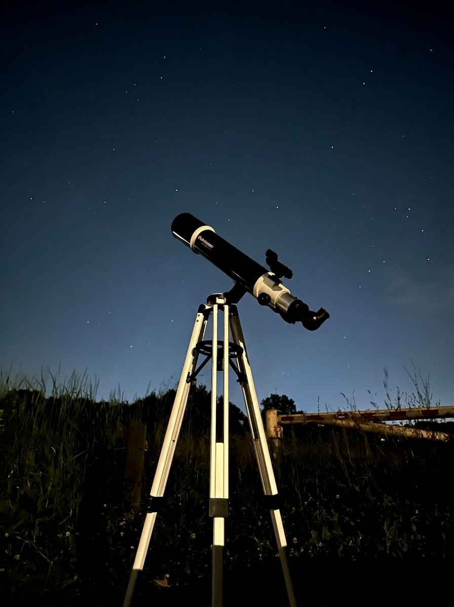
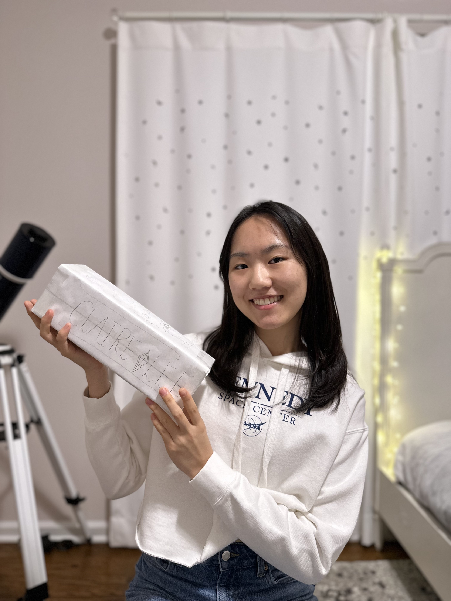
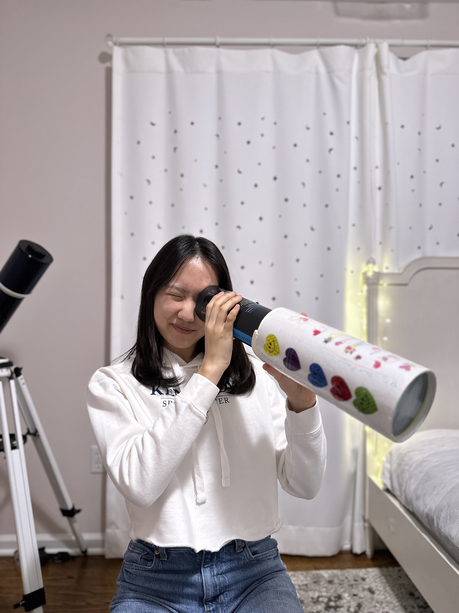
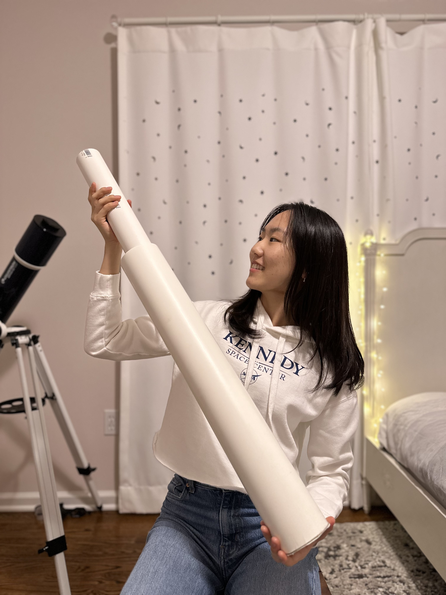
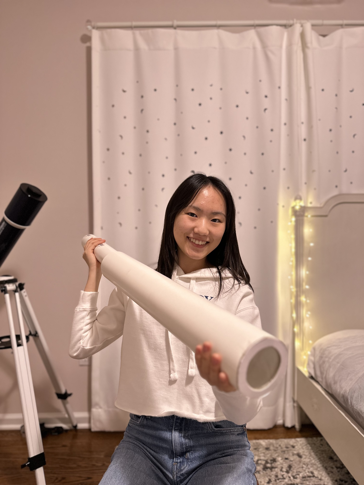

‹ Back to the Gallery
The Telescope
My Setup

Celestron Omni AZ 102
Type
Refractor telescope
Using since
2021
Find it online ↗
Seestar S50
Type
Smart telescope
Using since
2026
Find it online ↗
My first self-made telescopes!



